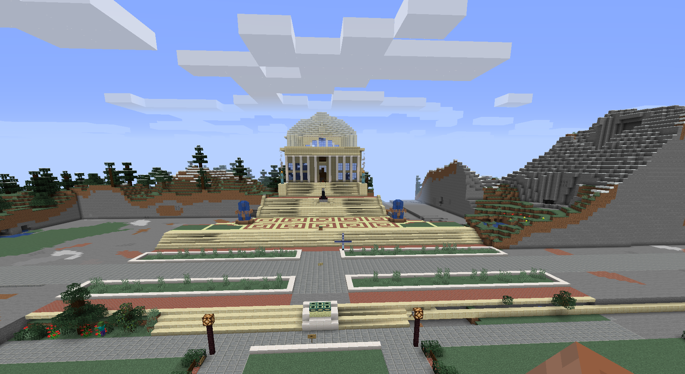

Columbia Virtual Campus

Columbia University
Mission
Our goal is to provide current and former Columbia students with a virtual
campus to reunite with classmates and professors. By working together as a community, users can help
rebuild
Columbia in all of its glory, block by block.
Features:
There is a Ranking System for different users (students, builders, alumni, passerby )
which you can read about in our FAQs!
All students will be able to build in Student Project areas.
Our server supports various Plugins, including World Edit for experienced Builder. More info
will be release about the Builder rank soon!
This website will be replaced with a Fully Functional, Automatic site that allows students
to confirm their association with Columbia and get started playing even faster!
Current Student Project
The current student project is Butler! One of the landmarks of Butler, all students
currently have permission to build within the bounds of butler!
Check it out HERE
The current student project is Butler! One of the landmarks of Butler, all students
currently have permission to build within the bounds of butler!
Check it out HERE